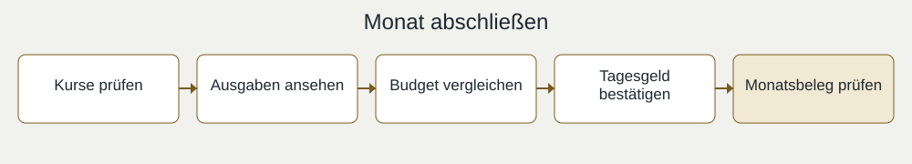
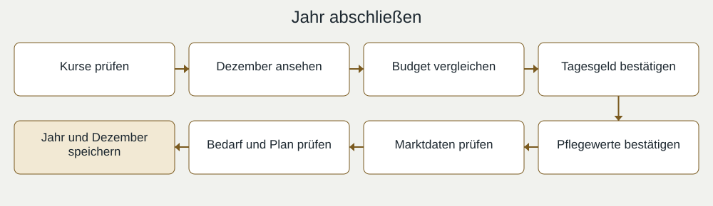
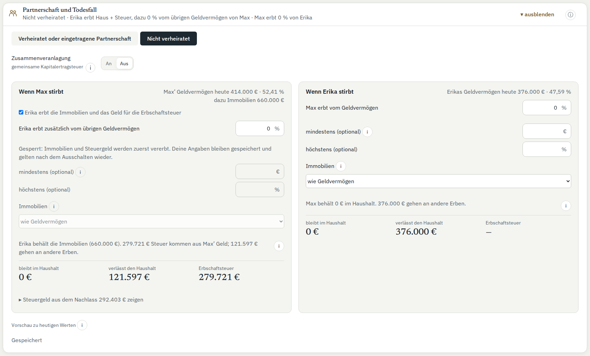
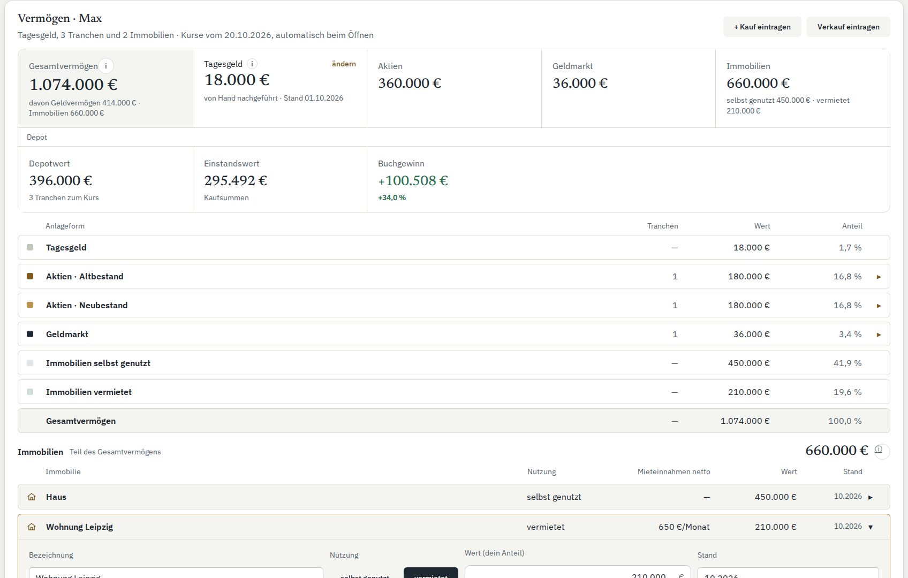
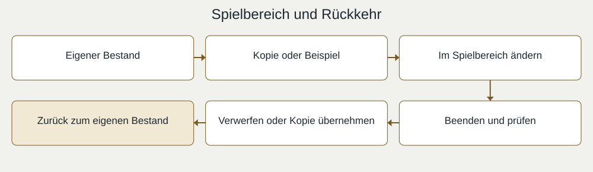

Öffne VermoegenUndRuhestand.exe oder starte im Projektordner start_suite.cmd beziehungsweise npm run serve. Im Browser öffnest du http://localhost:8000/index.html. Warte, bis Speicher und Haushalt geladen sind. Eine direkt geöffnete HTML-Datei reicht nicht.
Wähle auf der leeren Übersicht „Eigene Daten anlegen“, „Sicherung einspielen“ oder „Erst ausprobieren – mit Max und Erika“. „Erst ausprobieren – mit Max und Erika“ startet direkt diesen Beispielhaushalt. Über „Spielbereich starten …“ im Kopf wählst du unter „Beispielhaushalte“ einen von sechs Haushalten und eine Variante. Die Lebenssituationen helfen bei der Wahl. Der QUICKSTART führt mit Max und Erika als Beispiel bis zur ersten eigenen Sicherung.
Trage Geburtsdatum, Nettorente und Beginn sowie weitere Einkünfte ein. Der Personenabschnitt erklärt die Felder. Erfasse den heutigen Tagesgeldstand und vorhandene Depotkäufe; Immobilien haben einen eigenen Eingabeweg.
Bedarf und ersten Stand prüfen
Öffne „Haushalt & Plan“. Setze Planungsbeginn, Grundbedarf, Wunschbedarf und Mindest-Flex als Jahreswerte. Öffne Balance und prüfe die Vorschau mit ihren Personenquellen. Sie ist noch kein Jahresbeschluss.
Erstelle in Daten & Sicherung mit „Jetzt sichern“ eine Vollsicherung. Prüfe die heruntergeladene Datei am gewählten Ablageort. Den ersten Jahresbeschluss fasst du im Jahresabschluss.
Wenn der Einstieg stockt
Fehlt eine Person, prüfe Auswahl und Importstatus. Bei einem Speicherfehler bleibst du auf der Seite und folgst der Meldung. Meldet eine über „Zurück“ geöffnete Seite, dass sie veraltet ist, klicke im Hinweis auf „Jetzt neu laden“. Bis dahin speichert sie keine Eingaben, auch nach „Bleiben“. Prüfe bei einem leeren Bestand, ob du die EXE oder dieselbe Browserseite wie zuvor geöffnet hast.
Öffne „Personen verwalten“ neben den Reitern. Hier legst du Personen an, benennst sie um oder löschst sie.
Setze „im Haushalt“ für die Personen, mit denen Balance und Simulator rechnen sollen. Außenpersonen bleiben gespeichert.
Prüfe vor Löschen oder Haushaltsänderung die Rückfrage. Partnerschaft, Testament, Plan und gemeinsame Ausgaben bleiben eingetragen; passe sie danach an.
Ein Haushalt hat eine oder zwei Personen. Bei zwei Mitgliedern entfällt „+ Person anlegen“; weitere Personen können erst nach einem Austritt beitreten. Bei der letzten Haushaltsperson sind Austritt und Löschen mit Begründung gesperrt.
Vor einer Änderung entsteht ein Wiederherstellungspunkt. Den Rückweg und die Spielbereichssperre erklärt Stand zurückholen.
Personendaten einmal zentral pflegen
Wähle den Personenreiter in Personen & Vermögen. Öffne „Person & Steuern“ und pflege Geburtsdatum und Steuerwerte. Änderungen werden automatisch gespeichert. Eine angebotene Übernahme alter Angaben wird erst mit deiner Bestätigung gespeichert; Abbrechen oder Escape erhält die fachlichen Rohwerte.
Die Personenkarte zeigt das heutige Alter, der Jahresplan das Alter am 1. Januar. Bei passendem Geburtsdatum zeigt der Plan 67 Jahre am 01.01.2026 und 68 am 01.01.2027. Fehlt das Datum, ergänzt die App keinen Tag oder Monat. Prüfe den Bezug im ⓘ. Unter „Depot, Einkünfte, Verlauf“ siehst du die Bestände und künftigen Einkommensstufen mit Datum und Grund. Eine eingerichtete Pflegereserve steht als eigene Gruppe darin.
Max zeigt die Einkünfte mit einer einmaligen Einkunft. · Max und Erika Mustermann
Einkünfte und Rente eintragen
Öffne „Einkünfte“ mit „zeigen“. „+ Feste Einkünfte“ ergänzt Art, Bezeichnung, monatlichen Nettobetrag, „ab“, „bis“ und Anpassung. Gib Zeitgrenzen als MM.JJJJ ein; leere Grenzen gelten unbegrenzt. Die gesetzliche Rente ist einmal je Person vorhanden und bleibt als Zeile erhalten, auch mit 0 €.
Trage die Rente als verfügbaren Nettobetrag in heutigen Werten ein. Der Beginnmonat zählt mit: ab Juli sechs Monatsrenten. „+ Einmalige Einkünfte“ ergänzt Monat, Betrag und Bezeichnung. Prüfe Meldungen unter den Feldern und die Summen. Eine einmalige Einkunft zählt in Balance erst nach Eingang im tatsächlichen Tagesgeld.
Prüfe vor dem Rechnen die Haushaltsnamen. Die gerade angezeigte Person bestimmt das bearbeitete Depot; Balance und Simulator verwenden dagegen alle Haushaltspersonen. Die Personenverwaltung ändert die Zugehörigkeit.
Bedarf und Strategie festlegen
Trage in „Bedarf pro Jahr“ Grundbedarf (Floor), Wunschbedarf (Flex) und Mindest-Flex als Jahresbeträge ein. Ein Mindest-Flex über dem Wunsch-Flex wird am Feld abgewiesen. Öffne „Weitere Planwerte“ für Flex-Budget, Reserven, Entnahme & Umschichten, Dynamik und Marktdaten. Zugeklappte Werte wirken weiter.
Stelle bei der Liquiditätsreserve zuerst die Reichweite und dann „davon im Tagesgeld“ ein. Vorgabe sind zwölf Monate; erlaubt sind ganze Monate von null bis zur Reichweite. Das ⓘ erklärt die eiserne Reserve und persönliche Ziele. Bei einer Bestandswarnung zu Anleihen oder Gold aktivierst du die passende Strategie oder korrigierst den Bestand. Tagesgeld, Steuerwerte und Pflegereserve pflegst du je Person.
Öffne „Geplante Ausgaben“ unter dem Bedarf. „+ Feste Ausgaben“ ergänzt Bezeichnung, Monatsbetrag, Zeitraum und Anpassung; „+ Einmalige Ausgaben“ Monat, Betrag in heutigen Preisen und Bezeichnung. Änderungen speichern automatisch; Prüfmeldungen kennzeichnen ungültige Entwürfe.
Trage hier Posten zusätzlich zum Monatsbudget ein, etwa Auto oder Kreditraten. Ordne eine bezahlte Ausgabe später in der Importvorschau zu. Dann reserviert Balance sie nicht erneut.
Zentrale Planänderungen gelten für künftige Rechnungen. Der vorhandene Jahresbeleg bleibt bestehen. Folge der Vergleichszeile unter dem Plan zur vollständigen Tabelle auf der Übersicht. Meldet sie eine veraltete Vorschau, öffne „Vorschau in der Balance rechnen →“. Wie Änderungen das Jahresgedächtnis beeinflussen, erklärt das Jahresbudget.
Wenn eine Eingabe nicht passt
Prüfe vor jeder Änderung die aktive Person. Behebe Feldmeldungen vor dem Seitenwechsel. Bei ungeklärtem Speicherstatus wiederholst du den Zugriff, bevor du neu lädst.
Wähle bei der Person unter „Einkünfte“ die Aktion „+ Feste Einkünfte“, Art „Sonstige Einkünfte“, Bezeichnung Gehalt. Trage den verfügbaren Nettobetrag je Monat ein. Setze „bis“ auf den Monat vor Rentenbeginn und wähle bei Bedarf „wie Löhne, ohne nominale Senkung“.
2
Rentenbeginn prüfen
Trage in „Gesetzliche Rente“ die erwartete Nettorente in heutigen Werten und den Beginn als MM.JJJJ ein. Prüfe, dass sich Gehalt und Rente wie beabsichtigt ablösen.
3
Bedarf ergänzen
Pflege Grundbedarf, Wunschbedarf und Mindest-Flex unter „Haushalt & Plan“. Große zusätzliche Vorhaben gehören in „Geplante Ausgaben“.
Sophie spart mit ihrem Gehalt an; die Rente beginnt im Januar 2038. · Sophie Mustermann
Ansparjahre ansehen
Öffne im Simulator unter „Annahmen“ die Karte „Einkünfte, Ausgaben und Bedarf“. Wähle eine Jahreszeile. Die Monatszeile zeigt „angelegt“ oder „aus Vermögen“. Prüfe besonders das Jahr des Rentenbeginns. Die Tabelle ist eine Vorschau; Backtest und Monte Carlo ergänzen Markt- und Modellereignisse.
Zum Üben wählst du Sophie im Spielbereich und vergleichst ihren Grundfall mit „Teilzeit vor der Rente“. Die Beispielbeschreibung nennt die Aufgabe.
Den heutigen Stand abgleichen
Balance zeigt im Ansparjahr die Aufteilung „Einkünfte = Monatsbudget + angelegt“. Die Handlungsanweisung verwendet bereits erfasste Bestände. Künftiger Gehaltsüberschuss ist noch kein vorhandenes Tagesgeld. Überweisungen und Käufe führst du selbst aus; bestätigte Käufe erfasst du als Tranchen.
Öffne auf der Übersicht „Abschluss starten“. Zu Beginn des Folgemonats ist der vergangene Monat fällig. Vier Schritte führen zum Beleg. Kopf und Fuß bleiben beim Scrollen sichtbar; die Fußzeile nennt den nächsten offenen Punkt.
01 · Die Übersicht bietet den Oktoberabschluss an. · Max und Erika Mustermann

Monat abschließen · Pfeile zeigen die Schrittfolge; Messing markiert den Abschluss.
Vier Schritte prüfen
Die vier Reiter heißen „Kurse“, „Ausgaben“, „Budgetvergleich“ und „Tagesgeld & Monatsbetrag“. Wähle sie oben oder gehe mit „Weiter“ unten rechts zum nächsten Schritt.
1
Kurse prüfen
Sieh Kursstände und Teilerfolge an. Fehlende Kurse verhindern den Monatsabschluss nicht; nur gültige verfügbare Kurse werden übernommen.
02 · Kursstände und mögliche Lücken prüfen. · Max und Erika Mustermann
2
Ausgaben ansehen
Wähle „CSV auswählen …“ je Person und prüfe die Vorschau. Der Dateiname steht daneben. „Import ersetzen …“ öffnet die Auswahl erneut. Die Kategorie-Tabelle mit Personenspalten und Summe steht darunter offen. Nach einem Import geht es erst weiter, wenn alle Personen Monatsdaten haben. Ohne Import kannst du weitergehen.
03 · Der Importstand wird je Person angezeigt. · Max und Erika Mustermann
3
Budget vergleichen
Lies Ausgaben, Monatsbudget und Abweichung. Ohne Jahresbeleg ist das Budget vorläufig. Ein Haken bedeutet angesehen; eine Überschreitung steht getrennt in Gelb. Hat der Haushaltsmonat eine Aufteilung aller Personen, zeigen zwei weitere Kacheln Floor und Flex: Betrag und Prozent gegen je ein Zwölftel von Grundbedarf und übrigem Jahresbudget. Ohne Aufteilung zählt der Monat nur im Gesamt. Vergleiche schwankende Monate mit dem Jahresdurchschnitt auf „Ausgaben“.
04 · Monatsausgaben und Budget nebeneinander lesen. · Max und Erika Mustermann
4
Tagesgeld prüfen
Die Personen stehen nebeneinander; darunter steht der Monatsbetrag in einem eigenen Kasten. Das Feld zeigt Tagesgeld für jede Person mit dem letzten bekannten Stand und Datum. Überschreibe ihn bei Bedarf; einen fehlenden Stand musst du eintragen. Der Hauptknopf speichert die Feldwerte zum Abschlussdatum und schließt den Monat ohne weitere Rückfrage ab.
05 · Tagesgeld aller Personen bestätigen oder ändern. · Max und Erika Mustermann
Ergebnis lesen
„Alles gespeichert.“ bestätigt den Abschluss. Links steht das Monatsbudget, rechts zeigen die Kacheln Ausgaben, Tagesgeld gesamt und Entnahme für den Folgemonat. Die Reiterleiste entfällt. „Herleitung anzeigen“ öffnet Budget, Tagesgeld je Person und Entnahmequelle. „Fertig“ schließt das Ergebnis. Die App überweist nichts; den Monatsbetrag überträgst du selbst.
06 · Der Oktoberabschluss ist gespeichert. · Max und Erika Mustermann
Wenn der Abschluss stockt
Ein gesperrter Knopf nennt den fehlenden Schritt: Sieh alle vier Schritte an, bestätige Tagesgeld aller Personen und prüfe den passenden Plan. „Erneut versuchen“ wiederholt einen fehlgeschlagenen Abschluss.
Beim Schließen lässt „Bleiben“ den Entwurf offen. „Verwerfen“ verwirft nur ungespeichertes Tagesgeld; importierte Ausgaben und Vermögenspunkte bleiben erhalten. Am Jahreswechsel hat der Jahresabschluss Vorrang und schreibt den Dezemberbeleg mit.
Öffne Ausgaben und prüfe Jahr und Personenfilter. Das Importsymbol beim Monat öffnet die Dateiauswahl.
2
CSV prüfen
Wähle die Ausgaben-CSV mit Kategorien und Beträgen, etwa „Kategorie;Betrag“ und „Lebensmittel;-450,00“. Optional ergänzt du „Bedarf“: „Floor“ oder „Grundbedarf“ und „Flex“, unabhängig von Großschreibung und Rand-Leerzeichen. Dieselbe Kategorie darf beide Bedarfe haben; gleiche Paare werden addiert. Die App ordnet nichts selbst zu; die Vorschau zeigt Floor, Flex und Summe. Ohne Spalte zählt der Import nur im Gesamt. Prüfe Summe, Vorzeichen und ersetzte Monatsdaten vor der Bestätigung.
3
Geplante Ausgabe zuordnen
Enthält der Import eine geplante Ausgabe, wähle sie in der Vorschau und prüfe den bezahlten Betrag. Damit bestätigst du sie als vollständig bezahlt. Bei Aufteilung wird sie zuerst vom Flex abgezogen, ein Rest vom Floor. Sie bleibt in den Kategorien sichtbar, zählt aber außerhalb des Monatsbudgets. Gib Dezimalstellen mit Komma ein. Beim Reimport bleibt die Zuordnung auch nach Löschen des Planpostens vorgeschlagen; entferne sie nur durch bewusstes Abwählen.
Oben stehen Jahresbudget, Ausgegeben, Restbudget und Hochrechnung. Direkt darunter zeigt „Monate“ Januar bis Dezember mit Import und Lupe je Person. Daneben steht „Wofür?“; lange Kategorienlisten scrollst du innerhalb der Karte.
„Restbudget“ ist Jahresbudget minus bestätigte Ausgaben. Die Hochrechnung nutzt den Mittelwert positiver Ausgaben vollständiger, abgelaufener Monate × zwölf. Eine Überschreitung erscheint warm hervorgehoben mit Betrag und Prozent. Teilausgaben bleiben in der Ist-Summe. Der Budgetvergleich stammt aus dem festgeschriebenen Jahresbeleg, ersatzweise aus einer passenden Vorschau. Vergangene Jahre mit Lücken zeigen eine vorläufige Budgetdifferenz, vollständige Jahre den Jahressaldo.
Floor und Flex vergleichen
Unter den Monaten vergleicht „Floor und Flex“ nur im Haushalt den Floor mit Grundbedarf, Flex mit Jahresbudget minus Grundbedarf und Gesamt mit Jahresbudget. Floor und Flex verwenden nur gezählte Monate mit Aufteilung aller Haushaltspersonen; „Gesamt“ entspricht der Hochrechnung oben. Die Karte nennt vorhandene Lücken.
„Monate mit Floor und Flex anzeigen“ öffnet Monatswerte und signierte Abweichungen gegen je ein Zwölftel des Plans. Darunter stehen Mittelwert und Monatsplan. Monate ohne Aufteilung zählen nur im Gesamt. Die Klappe beginnt beim Laden geschlossen. Gesamt, Budget und Monatsabweichung stehen oben in „Monate“. Geteilte Kategorienbalken zeigen Floor und Flex, ungeteilte Beträge erscheinen grau. Die Fußzeile zeigt nur Anteile mit Betrag; ohne Aufteilung entfällt sie.
Kategorien und Jahre nachschlagen
Die Lupe zeigt bei Importen mit „Bedarf“ Kategorie, Floor, Flex und Summe samt Summenzeile. Alle Beträge stehen mit zwei Nachkommastellen, Ausgaben positiv und Erstattungen mit Minuszeichen. Floor und Flex ergeben zusammen die Summe. Das gilt auch im Personenfilter. Ohne Aufteilung zeigt sie Kategorie und Summe mit Neuimporthinweis. Bei „Aufteilung nicht lesbar“ importiere den Monat neu. Bis dahin bleiben die Daten erhalten.
„Ausgaben je Jahr“ umfasst alle gespeicherten Personen. Im Haushalt stapeln sich tatsächliche Ausgaben von unten nach Floor, Flex und Beträgen ohne lesbare Aufteilung. Geplante Ausgaben sind enthalten. Eine helle Schraffur verlängert das laufende Teiljahr bis zur Hochrechnung; daneben stehen Teilbeträge. „Einzelne Jahre anzeigen“ öffnet die unveränderten Jahreszahlen. Im Personenfilter bleiben die bisherigen einfarbigen Säulen ohne Floor/Flex-Legende.
Wenn Summe oder Vergleich fehlen
Bei vorhandener Spalte „Bedarf“ bricht ein leerer oder unbekannter Wert den gesamten Import mit Zeilennummer ab. Korrigiere die CSV und importiere erneut. Korrigiere auch Vorzeichen, Zahlenformat oder Personenmonat vor dem Import. Fehlende Personenmonate importierst du einzeln. Löschen eines Imports öffnet auch die zugeordnete geplante Zahlung wieder. Ein bestätigter Import bleibt bei Abbruch eines Abschlussdialogs gespeichert. Ein separat gemeldeter fehlender Vermögenspunkt macht ihn nicht ungültig.
Öffne „Personen & Vermögen“ und prüfe die aktive Person. „+ Kauf eintragen“ öffnet den Editor.
2
Tranche erfassen
Trage Name, Kaufdatum, positive Stückzahl, Kaufpreis und aktuellen Preis ein. Ergänze ISIN, Yahoo-Ticker und Notizen. Marktwert und Einstand folgen aus Stückzahl und Preisen.
3
Kategorie und Teilfreistellung prüfen
Aktien passen zu Altbestand oder Neubestand, Anleihen zu Anleihe, Geldmarkt zu Geldmarkt-ETF und Gold zu Gold-ETC. Bestätige die Teilfreistellung passend zum Instrument. Beachte Warnungen zur Strategie bei Anleihen und Gold. Neue Aktienkäufe im Simulator übernehmen die Teilfreistellung der vorhandenen Fonds derselben Person.
4
Speichern und abgleichen
„Tranche speichern“ übernimmt den Bestand. Warte auf Erfolg, vergleiche mit dem Depotauszug und pflege Tagesgeld getrennt nach.
Tranche korrigieren
Öffne die Bearbeitung der Zeile und bestätige die geänderten Werte. Löschen entfernt die Tranche nach Rückfrage. Einen tatsächlichen Verkauf erfasst du über den Verkaufszugang. Rückwirkende Änderungen können die belegbare Verlaufsabdeckung verkürzen.
Wenn Speichern scheitert
Prüfe positive Preise und Stückzahl, Kategorie, Typ und bestätigte Teilfreistellung. Bei beschädigten Beständen folgst du der Wiederherstellungshilfe.
Öffne bei der richtigen Person den Verkaufszugang der tatsächlichen Tranche. Verwende eine stabile Ausführungs-Kennung, etwa die Broker-Order-ID. Prüfe Datum und Tranche.
2
Brokerwerte erfassen
Trage Stücke, Bruttoerlös und Kosten ein. Eine frühere Empfehlung dient nur zum Vergleich. Entscheidend ist die tatsächliche Ausführung.
3
Vorschau prüfen
Gib an, ob der Erlös schon im Tagesgeld enthalten ist. Prüfe alten und neuen Bestand, Nettoerlös und Cashstatus. Bestätige erst dann die dauerhafte Fortschreibung.
Tagesgeld nachführen
Ist der Erlös noch offen, trage den tatsächlichen Kontostand unter „Personen & Vermögen“ beim Tagesgeld ein und schließe danach den Cashstatus ab. Ist er schon enthalten, bestätige dies und addiere nichts erneut. Die App bucht den Erlös nicht automatisch.
Enter oder Verlassen des Feldes speichert Tagesgeld; Escape verwirft die Eingabe. Pflege auch Überweisungen nach. Eine identische Ausführungs-Kennung mit denselben Daten wird nur einmal angewandt; eine neue Kennung für denselben Verkauf umgeht diesen Schutz.
Tagesgeld direkt in der Vermögenskarte bearbeiten. · Max und Erika Mustermann
Wenn die Vorschau nicht passt
Verkaufe höchstens den vorhandenen Bestand. Hat sich die Tranche seit der Vorschau geändert, erstelle diese neu. Bei unklarem Cashstatus gleiche zuerst das Konto ab.
Erstelle eine Vollsicherung. Öffne den fälligen Abschluss auf der Übersicht mit „Abschluss starten“. Nach „Verwerfen“ oder Esc bleibt er dort erreichbar, solange er fällig ist. Sieben Reiter führen zum neuen Jahresplan und zum Dezemberbeleg. Wähle einen Reiter oben oder „Weiter“ unten rechts. Kopf, Reiter und Fußleiste bleiben beim Scrollen stehen. Nach einer Pause bietet die App zuerst das nächste offene Jahr an. Bestätige dafür die damaligen Jahresendstände und Jahresdaten. Öffne danach den Abschluss erneut, bis alle verpassten Jahre nachgeholt sind. Die Fußzeile nennt den nächsten offenen Punkt; ⓘ erklärt die Abschlussbedingungen. „Jetzt sichern“ steht links in der Fußleiste; das zugehörige ⓘ erklärt den Sicherungshinweis.
01 · Dezember und Jahr 2026 stehen zum Abschluss bereit. · Max und Erika Mustermann

Jahr abschließen · Pfeile zeigen die Schrittfolge; Messing markiert den Abschluss.
Sieben Schritte prüfen
1
Kurse prüfen
Prüfe links Kursstand, Abrufzeit und ältestes Kursdatum. Rechts zeigt die Tranchen-Tabelle Person, Kurs und Status. „Technik“ bleibt zugeklappt.
2
Dezemberausgaben ansehen
Importiere die Ausgaben je Person. Der Import führt erst weiter, wenn alle Dezemberdaten vorhanden sind. Korrigiere frühere Lücken auf „Ausgaben“.
3
Budget vergleichen
Prüfe Ausgaben, Monatsbudget und Abweichung. Rechts stehen Jahresausgaben, Jahresbudget und Jahresdurchschnitt; Lücken blockieren nicht.
4
Tagesgeld prüfen
Prüfe pro Person Stand und Datum; trage den Jahresendstand ein. Änderungen rechnen die Planvorschau neu. Der Abschluss speichert die Feldwerte.
5
Pflegewerte bestätigen
Prüfe Pflegegeld je Grad und Heim-Eigenanteil samt Stand und Quellen. „Unverändert bestätigen“ erledigt den Schritt. „Werte ändern …“ öffnet Beträge und „gültig ab“. Ein Abbruch verwirft den Entwurf.
07 · Pflegewerte für das neue Planjahr bestätigen. · Max und Erika Mustermann
6
Jahresmarktdaten prüfen
Prüfe Inflation, ETF-Schlusskurs und CAPE mit Jahresstand und Herkunft. Fehlende Werte kannst du von Hand ergänzen. Darunter steht die Marktlage zum Jahresende. Unterscheiden sich Budget oder Verkauf, wählst du rechts „Nach der Jahresendregel“ oder „Mit dem Jahreshoch vom …“. Es gibt keine Vorauswahl; bis zur Wahl sind „Weiter zum Plan“ und „Jahr abschließen“ gesperrt. Bei gleichen Folgen ist keine Wahl nötig. Ist der Vergleich nicht belastbar, nennt die App den Grund und verwendet die Jahresendregel.
7
Bedarf und Plan prüfen
Vergleiche Grundbedarf und Wunschbedarf mit dem Ist: Mittelwert der Monate mit Aufteilung × zwölf, einschließlich großer Einzelposten. Wähle je Zeile „Plan J + Inflation“ oder „Ist J + Inflation“ für Abschlussjahr J. Vorschläge und hochgerechneter Mindest-Flex werden auf volle 1.000 € aufgerundet. Unter deinem Wert steht die gewählte Herkunft. Eine eigene Eingabe hebt die Auswahl auf und zeigt „eigener Wert“. Ohne Aufteilung gibt es nur den Planvorschlag. Ist-Ausgaben werden nur durch deine Auswahl übernommen. „Weitere Planwerte …“ öffnet die übrigen Einstellungen. Rechts steht deine Marktwahl; „Wahl ändern“ führt zurück zu Marktdaten. Bedarfseingaben behalten die Wahl.
08 · Bedarf und Hochrechnung prüfen, eigenen Plan beschließen. · Max und Erika Mustermann
Abschließen und Ergebnis prüfen
Sind alle Schritte angesehen, Tagesgeld gültig, Pflegewerte bestätigt, Pflichtdaten gültig und eine nötige Marktwahl getroffen, wähle „Jahr 2026 abschließen“ beziehungsweise das angezeigte Jahr. Der Knopf schreibt ohne weitere Rückfrage. Links steht danach die festgeschriebene Handlungsanweisung; „Details“ zeigt die Verkäufe je Person mit Brutto, Steuer und Netto.
Darunter steht das Monatsbudget des Folgejahrs. Rechts findest du Kacheln und Herleitungen; die Reiterleiste entfällt. Ergebnis und Abschlussbeleg nennen die Lesart. Mit der Wahl des Jahreshochs gelten dessen Wert und Datum auch für die Folgejahre. Die Handlungsanweisung nennt diese Wahl. Zurück führt der Wiederherstellungspunkt des Jahresabschlusses. „Herleitung Plan“ zeigt Empfehlung, Beschluss, Änderungen und fehlende Monate; „Dezember“ öffnet den Monatsbeleg. „Abschlussbeleg“ führt zum Protokoll und zu Wiederherstellungshinweisen. Über die reale Umsetzung entscheidest du selbst.
09 · Jahresbeschluss und Handlungsanweisung sind sichtbar. · Max und Erika Mustermann
Alter und Rentenbeginn prüfen
Der Jahresabschluss erhöht kein gespeichertes Alter. Das Geburtsdatum bestimmt das Planalter am 1. Januar; ohne Datum bleibt das Altalter bestehen. Prüfe Beginnmonate unter „Berechnungsgrundlagen“ und öffne „Rentenbezugsmonate“ für die Monatszahlen.
Wenn nur ein Teil gelingt
Fehlt der ETF-Schlusskurs, trage einen gültigen Handkurs ein; „Mit diesem Kurs erneut abschließen“ wiederholt damit den Versuch. Ist das Jahr gespeichert und Dezember fehlt, speichert „Erneut versuchen“ nur den Monat. Während Speichern, Finalisierung und Wiederherstellung bleibt der Seitenwechsel gesperrt. Warte auf den Ergebnisstatus.
Öffne Balance → „Überblick“. Oben stehen „Dein Monatsbudget“ und „Handlungsanweisung & Vorschau“, darunter Marktphase, Bedarf und Reserven. Prüfe beim Budget Datum, Planbetrag und „Vorschau heute“. Ohne Jahresbeleg heißt es vorläufig. Die vollständige Vergleichstabelle findest du auf der Übersicht.
Die heutige Vorschau nutzt deine heutigen Bestände und den letzten VWCE.DE-Schluss nach dem Bezugsjahresende wie einen Jahresendkurs. Fehlt dieser Kurs, ist der Jahresstand unklar oder scheitert die Vorschau, gelten die eingetragenen Jahresmarktdaten. Bei offenem Vorjahresabschluss zählt höchstens der letzte Schluss bis Ende dieses Abschlussjahrs. Die Übersicht behält die Rechnung mit Jahresmarktdaten.
Klappe „Feste Einkünfte“ für Quellen und Rentenhinweise auf. Die Gleichung und der Monatsbalken verbinden Einkünfte und Entnahme mit dem Monatsbudget. Im Ansparjahr steht ein Überschuss als „angelegt“ daneben; geplante Ausgaben stehen außerhalb des Budgets.
Überblick trennt Beschluss und Vorschau. · Max und Erika Mustermann
Prüfe die Haushaltsnamen im Kopf. Die Zugehörigkeit änderst du in Personen & Vermögen.
Monatsbetrag zuordnen
So entsteht dein Monatsbetrag
Vergleiche Grundbedarf, Wunschbedarf und finanzierten Flex in „Dein Bedarf“. Der Monatsbetrag aus dem Vermögen und die Einkünfte ergeben das verfügbare Monatsbudget. Alle Beträge dieser Zeile stammen aus derselben Projektion wie das Monatsbudget. „über dem Plan (Dynamik)“ benennt zusätzlich erlaubten Flex.
Lies zuerst Bedarf und Einkünfte, danach die finanzierte Entnahme. Die Haushalts-Flex-Quote und die Flex-Rate der Vermögensentnahme haben verschiedene Bezüge.
Max und Erika Mustermann, synthetische Werte vom 17.10.2026, Backtest ab 2000 ohne Dynamic Flex. Vergleiche Monatsentnahme und Haushaltsbudget:
Klicke bei gekürztem Monatsbudget auf „Warum?“. Die Treppe zeigt die wirksamen Änderungen mit Monatsbeträgen; Anhebungen stehen als Plus. Bei Vollfinanzierung gibt es keinen Warum-Knopf. Nach einer neuen Rechnung ist die Erklärung wieder geschlossen.
Eine Kürzung des Wunschbedarfs ist noch kein Jahr unter Mindest-Flex. Im Simulator gilt die Mindest-Flex-Schwelle vom Laufstart mit ihrer Fortschreibung; lies den Ergebnisbezug mit.
Fehlt die Erklärung, prüfe, ob das Budget tatsächlich gekürzt ist. Vergleiche dieselben Personen und denselben Planstand.
„Dein Monatsbudget“ zeigt „Budget ‹Zieljahr› · Projektion mit heutigen Werten“. Rechts steht der festgeschriebene laufende Plan mit Differenz. „Bedarf & Strategie“, Reserven und „Diagnose“ zeigen das laufende Planjahr; deine Eingaben bleiben dessen Planwerte. „Warum anders als ‹Jahr›“ nennt bis zu drei Gründe mit ihrer Wirkung auf Bedarf, Einkünfte, geplante Zahlungen oder Budget. Diese Beträge ergeben keine Summe.
„Budgetprüfung für ‹Zieljahr›“ bereitet das nächste Jahr wie der Jahresabschluss auf einer Kopie vor: mit Inflation, Rentenbeginn und geplanten Folgejahresposten. Beide Marktvarianten verwenden denselben Entwurf. Die Annahmenzeile nennt Inflation und Quelle, Bestands- und Kursdatum sowie CAPE und Stand. Restentnahmen bis Dezember sind nicht abgezogen.
Unter 5 % Abstand steht „Nahe am Jahreshoch“ mit Hochdatum und Kürzungsschwelle. Ab 5 % zeigt „Hinweis“ den Rückgang, die Sicht der Jahresendregel und den Restabstand bis zum tiefen Bärenmarkt. Unter 10 % Abstand gilt ein Unterschied der beiden Lesarten als Grundrauschen: Ein Satz nennt ihn, der Plan folgt der Jahresendregel.
Ab 10 % zeigt „Prüfen“ verschiedene Budget- oder Verkaufsfolgen in Klartext, und im Jahresabschluss wählst du den Plan. „Jahresverlauf“ ist bei Hinweis und Warnung offen: Die Kurslinie zeigt gespeicherte Schlüsse, die gepunktete Gerade die Sicht der Jahresendregel und die getönte Fläche den tiefen Bärenmarkt. „Zwei Lesarten des Hochs“ vergleicht Hoch, Abstand, Marktlage, Monatsbudget und Verkauf. Abweichungen stehen zusätzlich als Wort an der Zelle. „Budget im Vergleich“ und „Markt und Umschichtung“ zeigen die Einzelheiten.
„Nicht bewertet“ nennt den Grund, wenn der Vergleich nicht belastbar ist. „Kurse auf Daten & Sicherung holen“ führt zu den Kursen. Verbindlich wird der Plan im Jahresabschluss; bei verschiedenen Folgen wählst du dort die Lesart.
So entsteht deine Handlungsanweisung
Lies zuerst die festgeschriebene Handlungsanweisung. Jede Verkaufszeile nennt Person, Wertpapier und ganze Euro. „Details zeigen“ öffnet ISIN, Centbeträge und „Käufe / Verwendung“. Prüfe danach die Projektion für das nächste Planjahr. „Wohin der Erlös fließt“ zeigt Tagesgeld, Geldmarkt und interne Umschichtungen je Person; die Steuer steht zuletzt. „Details & Drucken“ öffnet den vollständigen Vorschlag. Beim Kopieren bleiben alle Planbeträge centgenau. Die Herkunft des Belegs und die Steuerannahmen erklärt ⓘ.
Max und Erika Mustermann, synthetische Rechenvariante vom 17.10.2026: Lies in den Details 34.906,10 € Bruttoverkauf. Abzüglich 486,35 € Steuer bleiben 34.419,75 € für Liquidität. Die Deckung danach beträgt 103,7 % vor Jahresauszahlung. Ausführlich: Handlungsbeispiele.
Führe gewünschte Käufe und Verkäufe selbst aus und pflege nur die tatsächlichen Bestände nach. Es gibt keine Umsetzungsbestätigung oder Begründungspflicht.
„Diagnose“ erklärt Marktphase, Schwellen und Transaktionsvorschlag. „Empfehlung ausgelöst“ heißt, dass eine Empfehlung vorliegt; es wurde nichts gebucht. „Alle Kennzahlen“ öffnet Vermögensstand, Flex und Entnahme sowie Dynamische Berechnung.
Einen Planversuch rechnen
„Bedarf & Strategie“ zeigt die übernommenen Planwerte. „Alle Parameter“ öffnet weitere Einstellungen. „Nur hier ausprobieren“ macht sie lokal änderbar, „Zurück zum Plan“ verwirft den Versuch. Dauerhafte Änderungen gehören in „Haushalt & Plan“.
Vergleiche in „Deine Reserven“ Liquidität, Tagesgeld und Geldmarkt „heute“ und „nach Umsetzung“. Darunter stehen die persönlichen Tagesgeldziele mit Summe. Der Balken zeigt beide Deckungen zum Ziel bei 100 %. Ohne Vorschlag siehst du nur den heutigen Stand. Gold erscheint bei aktivem Plan oder Bestand, eine eingerichtete Pflegereserve separat. Das ⓘ erklärt Reichweite und Messzeitpunkt. Offene geplante Ausgaben und einmalige Einkünfte findest du bei den Posten des Planjahrs.
Öffne „Zum Verlauf →“ auf der Übersicht oder den Reiter „Verlauf“ in „Personen & Vermögen“. Wähle Haushalt oder Person. Die Kurve zeigt Bestände mit Tageskursen; Rauten und Tabelle zeigen erfasste Stände. Ältere Stände ohne Personenaufteilung findest du im Haushalt über ⓘ.
Die Legende „Geldvermögen mit heutigem Immobilienwert“ bedeutet: Der heutige Immobilienwert wird über den ganzen Zeitraum zum Geldvermögen addiert. Die Fläche zeigt keine gemessene historische Gesamtvermögensentwicklung; das ⓘ erklärt die Annahme.
Der Verlauf fasst das Haushaltsvermögen zusammen. · Max und Erika Mustermann
Zeitraum und Kennzahlen lesen
Wähle auf der Übersicht oder in „Personen & Vermögen“ zwischen „Alles“, „Laufendes Jahr“, „Letzte 12 Monate“, „Letzter Monat“ und „Letzte Woche“. „Alles“ ist vorausgewählt. Monat und zwölf Monate gehen vom letzten Tagesabschluss um einen beziehungsweise zwölf Monate zurück. Fehlt der Kalendertag im Zielmonat, gilt dessen Monatsende. Die Woche umfasst die letzten sieben Kalendertage bis gestern; kein Zeitraum beginnt vor der Aufzeichnung. Die Übersicht zeigt den gewählten Beginn unter dem Titel. In „Personen & Vermögen“ stehen Zeitraum, Messbeginn und Abdeckung bei „Aus Tageskursen“. Die Übersicht nennt „Messbeginn“ bei „Alles“ oder wenn die Daten erst nach dem gewählten Beginn einsetzen. Veränderung, Entnahmen, „Ohne Entnahmen gerechnet“, Entwicklungshöchststand und Rückgang beziehen sich auf Geldvermögen. Tagesgeld-Rückgänge können Transfers enthalten; „Ohne Entnahmen gerechnet“ ist keine Rendite. Die Achse folgt dem gewählten Verlauf mit vier bis sieben Linien und Schritten aus 1 · 2 · 2,5 · 5 × 10ⁿ; ein Bruchzeichen zeigt einen Beginn oberhalb von null.
Öffne auf der Übersicht das ⓘ „Aufteilung des Vermögens“. Bei Immobilien erklärt der Text unter der Aufteilung, dass ihr heutiger Wert für den ganzen Zeitraum angesetzt wird. In „Personen & Vermögen“ erklärt der Hinweis die Abgrenzung von Geldvermögen und Gesamtvermögen.
Rendite der Anlagen ansehen
Unter der Kurve stehen „Rendite und Risiko“, „Monatsrenditen“ und „Jahresübersicht“ für Anlagen ohne Tagesgeld. Haushalt oder Person gilt auch hier. Wähle den Zeitraum der Renditekarte; klappe Monatsrenditen je Anlageform auf.
Die Kursrendite enthält keine Ausschüttungen oder Kupons. Käufe und abgestimmte Verkäufe werden herausgerechnet. Jede Anlageform beginnt mit ihrem ersten Kauf. Bei späteren Kurslücken endet die Rechnung am letzten vollständig bewerteten Tag; der Hinweis nennt Stichtag und fehlende Anlage.
Rendite und Risiko sowie Monatsrenditen zeigen Anlagen ohne Tagesgeld. · Max und Erika Mustermann
Stand erfassen
Bestätige beim ersten Öffnen den Verlaufsbeginn mit „Beginn bestätigen“. Danach siehst du das Startdatum; „ändern“ öffnet es erneut. „Stand jetzt erfassen“ speichert den Haushalt und alle Haushaltsmitglieder, auch aus einer Personenansicht. Kursabhängige Bestände brauchen höchstens sieben Tage alte Kurse. Nach einem Ausgabenimport erfasst die App den Stand automatisch, wenn dieselbe Kursgrenze erfüllt ist. Ohne kursabhängige Bestände ist die Erfassung ebenfalls möglich. Ein unveränderter Tagesgeldwert im Abschluss ergänzt keinen neuen Verlaufspunkt.
Einzelne Tranche öffnen
Der Pfeil bei einer Tranche öffnet ihren Kursverlauf. Beim Überfahren zeigen Tagesfeld und Hilfslinie Datum und Schlusskurs, an Verkaufstagen auch die Stückzahl. Das Kursfeld passt seine Breite an den Inhalt an. Für eine Kurslücke steht „kein Kurs gespeichert“. Mit den Pfeiltasten liest Du die Tage; Esc schließt das Tagesfeld.
Wähle über dem Kursdiagramm „Alles“, „Laufendes Jahr“, „Letzte 12 Monate“, „Letzter Monat“ oder „Letzte Woche“. Die Wahl gilt für diese geöffnete Position und bleibt beim Größenändern erhalten. Bei „Alles“ berücksichtigt die Achse den Kaufpreis. Die Kursachse nutzt ebenfalls vier bis sieben Linien mit Schritten aus 1 · 2 · 2,5 · 5 × 10ⁿ. In kürzeren Zeiträumen zählt nur der Kurs; liegt der Kaufpreis außerhalb, ersetzt ein Hinweis die Kaufpreislinie. Die Fußzeile nennt die Kaufpreislinie nur, wenn sie sichtbar ist. Kopfzeile, Kursabdeckung und Verkaufsliste zeigen weiterhin den Gesamtbereich. Die Abdeckungsanzeige nennt geprüfte Kurstage; vor dem Messbeginn gibt es keine belegte Veränderung.
Lücken erkennen
Schraffuren zeigen ungeprüfte Werktage. Teilabdeckung enthält nur die bekannte Summe. Rückwirkende Änderungen können den historischen Bestand unbelegbar machen; bestätige ihn erst nach Abgleich mit deinen Unterlagen.
Wenn Werte fehlen
Prüfe Kursstatus und Zeitraum. Unter Daten & Sicherung ergänzt „Lücken jetzt nachladen“ verfügbare Tageskurse. Der Kursdienst liefert den Schluss vom Vortag oft erst am Vormittag. Fehlt er, fragt die App bei jedem Start erneut, bis der Tag 10 Tage zurückliegt. Offline stehen nur gespeicherte Kurse bereit.
Öffne Simulator → Annahmen. „Wer und womit“ zeigt Geldvermögen, Depot, Tagesgeld und Geldmarkt. Gold und Anleihen erscheinen bei aktivem Plan oder positivem Bestand. Prüfe Haushalt und „Bedarf pro Jahr“. „Alle Parameter“ öffnet die übernommenen Planwerte. „Nur hier ausprobieren“ aktiviert den lokalen Planversuch; „Zurück zum Plan“ verwirft ihn. Gib das Überlebensquantil als Prozent zwischen 50 und 99 ein; eine ungültige Eingabe zeigt den Fehler am Feld und wird nicht übernommen.
Wähle in „Einkünfte, Ausgaben und Bedarf“ eine Jahreszeile. Monatsbalken und Tabelle zeigen die geplanten Einkünfte je Person, Bedarf, zusätzliche Ausgaben und Anlage beziehungsweise Entnahme. Pflegegeld steht als eigene Einkunft darin. Die Vorschau enthält keine Marktschwankungen oder künftigen Lebensereignisse; ⓘ und Fußzeile nennen die Annahmen. Bei unerwartetem Pflegegeld prüfe Grad und Pflegeform.
Die Planübersicht zeigt den gewählten Monat über den Jahreswerten. · Max und Erika Mustermann
Unter „Annahmen“ stehen die Haushaltsnamen. Ändere die Zugehörigkeit bei Bedarf über „Personen verwalten“.
Personen für eine Rechnung ändern
„Rente & Personen“ zeigt eine schreibfreie Liste zentraler Werte. „In Personen & Vermögen ändern“ öffnet den dauerhaften Pflegeort. „Für diese Rechnung abweichend ansetzen“ aktiviert eine Sitzungsalternative. Ausschalten, Profilwechsel oder Seitenreload entfernt sie.
Unter „Modellannahmen zeigen“ prüfst du Hinterbliebenenrente und Bedarfsanteile nach einem Tod. Ohne zweite Person sind sie ausgeblendet. Ergebnisse und JSON-/CSV-Downloads behalten die beim Lauf verwendeten Werte; spätere Eingaben ändern den Laufbeleg nicht.
Wechsle zu „Backtest“, wähle Start- und Endjahr und klicke „Neu rechnen“. Zeitraumkarte und ⓘ nennen Datenbasis und Abdeckung. „Weitere Kennzahlen“ öffnet Zusatzwerte. Folge unter „Was im Lauf auffällt“ einem Jahreslink zur Protokollzeile. „Weitere“ ergänzt Ereignisse; „Auffälliges einblenden“ schaltet Marken und Kürzungsbänder im Verlauf um.
Wähle reale oder nominale Euro am Diagramm oder unter „Ergebnis → Durch die Krisen“. Die Wahl gilt gemeinsam für Ergebnis, Backtest und Monte Carlo; neue Läufe beginnen real. Chart und Krisenkarten zeigen Gesamtvermögen, darunter den Geldanteil. Das ⓘ erklärt den Vergleichszeitpunkt. Eine Rücklagenzusammenfassung nennt Restbestand, reale Deckung und Ziellücke. Ausführlich: Vermögen und Kaufkraft.
Backtest des Muster-Haushalts mit Links zu den Jahresbelegen. · Max und Erika Mustermann
Ergebnisse lesen
Öffne „Ergebnis“ und lies zuerst „Ist mein Grundbedarf gedeckt?“ und „Muss ich mich einschränken?“. Prüfe Fallzahlen, Laufende und die Erklärung im ⓘ. Zeitraumende ist kein nachgewiesenes Lebensende. Einschränkung zählt den Anteil abgeschlossener Entnahmejahre unter Mindest-Flex; Wunsch allein zählt nicht.
„Wunsch-Flex im typischen Lauf“ folgt dem Bedarf im Lauf. „Plan“ nennt den Wunsch-Flex zum Laufstart in heutiger Kaufkraft. Geldbeträge folgen der gewählten Euro-Basis. Bei „Annahmen seitdem geändert“ rechne neu; die Karten zeigen noch den vorherigen Lauf.
„Monte-Carlo rechnen“ startet weitere Pfade. Öffne „Einstellungen → zeigen“ im Monte-Carlo-Reiter; technische Optionen liegen unter „Erweitert“. Prüfe die Einstellungen und den Ressourcenhinweis vor großen Läufen.
Wenn der Lauf nicht passt
Bei falschem Startvermögen prüfe Haushalt und Bestände. Bei ungültigen Feldern folge der geöffneten Fehlermeldung. „Nicht auswertbar“ ist kein Erfolg und kein wirtschaftlicher Ruin. Der Backtest zieht keine zufälligen Todesfälle oder Pflegeeintritte; heutige Pflegeangaben können trotzdem wirken.
Öffne „Monte-Carlo → Einstellungen → zeigen“. Prüfe Laufzahl, Dauer, Methode und Seed in „Simulation“, „Zeitraum & Daten“ und „Stresstest“. ⓘ erklärt Daten-Gewichtung und Start-Szenario. „Erweitert“ enthält Rechenprozesse und Diagnose. Starte mit „Monte-Carlo rechnen“. Der Seed allein beschreibt den Lauf nicht.
Simulation, Zeitraum & Daten und Stresstest stehen in Einstellungen; Erweitert zeigt die technischen Optionen. · Max und Erika Mustermann
Kernwerte prüfen
„Überblick“ zeigt Deckung, Einschränkung, Gesamtvermögen am Ende und Entnahmen. Lies gültige Fallzahlen, Fehlerstatus und Zeitraum. Bei Einschränkung stehen Median der Laufanteile (p50) und betroffene Läufe nebeneinander. Ein Median von 0 % schließt einzelne betroffene Läufe nicht aus.
Verteilung ansehen
„Risiko und Verteilung“ zeigt Median und mittlere Hälfte. „Weitere Marken zeigen“ ergänzt Randwerte und Perzentile. Ein P10-Vermögen und ein P10-Ausgabenwert müssen nicht zum selben Lauf gehören. Die Euro-Wahl verändert Geldanzeigen, nicht die Pfadauswahl.
Öffne „Pflege“ und vergleiche Eintritt, Dauer und Mehrbedarf je Person. Lies im ⓘ die Bezugsgruppe mit. Rücklagennutzung, Restbestand und Ziellücke folgen der Euro-Wahl; die Zinsstatistik ist als nominal gekennzeichnet und enthält auch null und negative Erträge. Die Einstellungen änderst du unter Annahmen → Pflege. Ausführlich: Pflege- und Rücklagenstatistik.
Pfade und Jahresprotokoll öffnen
„Szenario-Logs → Pfade vergleichen“ zeigt P10, Median und P90. Wähle eine Pfadnummer oder „Was hier auffällt →“. Karten, Kurven und Protokoll folgen demselben Pfad. Jahreslinks springen zur passenden Zeile; das ⓘ nennt das gezogene Datenjahr.
Wähle in der Szenarioliste „Typischer Marktverlauf“, um einen mittleren Aktienmarktpfad zu lesen, oder „Median des Geldendvermögens“ für den mittleren nominalen Geldendwert. Beide können verschiedene Läufe zeigen. Protokoll, JSON und CSV folgen deiner Auswahl; das ⓘ erklärt die Rangfolge.
„Detailliert“ ergänzt Einzelbeträge. „Pflege-Spalten“ zeigt Pflegekosten auch in der normalen Monte-Carlo-Ansicht; im Backtest gibt es diesen Schalter nicht. Weitere Rechenspuren stehen im vollständigen Export. „An Erben“ und „Erbschaftsteuer“ sind schon in Normal sichtbar. Die Finanzannahmen des abgeschlossenen Laufs samt dessen Personenbeleg bleiben in „JSON“ und „CSV“ eingefroren. Die Downloads sind keine Vollsicherung.
Eine Entscheidung vergleichen
Öffne „Vergleich → Was verändert meine Entscheidung?“. Wähle eine Änderung: Wunschbudget, einmalige Ausgabe oder verschobener Beginn einer vorhandenen Einkunft. „Vergleich rechnen“ stellt beide Pläne auf gepaarten Pfaden gegenüber.
Lies „Wo die Änderung schadet“, „Was sie bringt“ und die Tabelle mit Deckung, Einschränkung, Budget und Geldendvermögen. Prüfe die tatsächliche Laufzahl und die ⓘ zu den Kennzahlen. „Änderung übernehmen? Im Planversuch ausprobieren →“ öffnet den Versuch; trage die Änderung dort selbst ein. Der Vergleich speichert keinen Plan.
Max und Erika Mustermann · Wunschbudget +300 €/Monat · 1.000 gepaarte Läufe je Plan bei Einstellung 10.000, Seed 12345.
Höchstes Wunschbudget suchen
Wähle „Höchstes Wunschbudget finden“, gib die Grenzen für Grundbedarfsdeckung und Läufe unter Mindest-Flex ein und starte „Suchen“. Fortschritt und Ergebnis nennen den geprüften Betrag sowie die Laufzahlen für Suche und Endprobe.
Prüfe beide Ist-Werte der Endprobe sowie Hinweise auf eine unbestätigte Probe oder erreichte Suchgrenze. Ein Fund gilt für die geprüften Beträge und ist kein garantiertes Maximum. „Betrag übernehmen? Im Planversuch ausprobieren →“ überträgt nichts automatisch. „Abbrechen“ beendet auch die Endprobe.
Max und Erika Mustermann · Zielwertsuche mit mindestens 99 % Grundbedarfsdeckung und höchstens 10 % Läufen unter Mindest-Flex · 1.000 gepaarte Läufe je Schritt bei Einstellung 10.000, Seed 12345; die Grenzen entsprechen den Vorgaben.
Prüfe Fehlerstatus und Nenner, bevor du eine Quote liest. Bei geändertem Plan oder geänderten Einstellungen rechne neu. Fehlende Messdaten bedeuten nicht 0 % Risiko.
Das Ergebnis bleibt bis zum Schließen der App erhalten, solange die Eingaben gleich bleiben. Nach einem Wechsel ins Handbuch steht es wieder da, mit der Zeile „Ergebnis von … · Eingaben unverändert“. Hast du etwas geändert, rechne neu.
Öffne „Simulator → Werkstatt“. Wähle bei einem Werkzeug „Öffnen“. Eingaben und Ergebnisse gehören zu diesem Werkzeug; eine Suche ändert deinen gemeinsamen Plan nicht.
Stresspfad-Replay
Wähle einen vorhandenen Pfad und ändere die gewünschten Parameter. Starte den Vergleich und prüfe Kennzahlen, Unterschiede und Jahreswerte. Der Pfad bleibt gleich; das Ergebnis gilt für diesen Verlauf. Geldvermögens-Endwerte enthalten wie bei Monte Carlo die verbleibende Pflege-Rücklage.
Replay zeigt die Pfadeingaben. · Max und Erika Mustermann
Parameter-Sweep
Gib einen Einzelwert, eine Liste oder einen Bereich als „von:Schritt:bis“ ein. Prüfe Kombinationenzahl und Rechenaufwand vor dem Start. Lies Rangfolge und Sensitivität nur für die gewählten Bereiche und Seeds.
Auto-Optimize
Setze Suchgrenzen und Nebenbedingungen und starte die Suche. Prüfe Champion, Testmetriken, Stabilität und Modellstatus. Öffne eine angebotene Übernahme zunächst als Versuch und prüfe die Werte dort; es entsteht kein Jahresbeschluss. Dynamic Flex muss dem Bewertungsmodus entsprechen, sonst wird die Übernahme abgelehnt.
Wenn der Aufwand zu groß wird
Verkleinere Wertebereiche oder vergröbere Schritte. Bei unwirksamen Parametern prüfe Strategie und Sperrhinweise.
Öffne „Personen & Vermögen → Haushalt & Plan → Partnerschaft und Todesfall“. Wähle verheiratet oder nicht verheiratet. Bei Ehe stehen darunter Güterstand und „Zusammenveranlagung“. Vorgabe ist „Zugewinngemeinschaft (gesetzlich)“; das ⓘ erklärt die Rechnung ab Planstart.
2
Geld und Immobilien festlegen
Trage den Erbprozentsatz je Person ein. Ergänze bei Bedarf Mindestbetrag mit Kaufkraftstand und Höchstanteil. Wähle für selbst genutzte Immobilien „wie Geldvermögen“, „Wohnrecht auf Lebenszeit“ oder „Eigentum auf Lebenszeit“. „Immobilien und Steuergeld“ setzt diese Testamentangaben inaktiv; Ausschalten aktiviert sie wieder. Ohne Immobilien gelten die Testamentangaben trotz Häkchen.
3
Steuerart prüfen
Wähle bei Wohnrecht sofortige oder jährliche Steuerzahlung. Pflege die ortsübliche Monatsmiete bei der Immobilie. Lies die Vorschau zu heutigen Werten und ihre ⓘ; sie zeigen Annahmen und Grenzen.

Nicht verheiratet mit Steuervorschau zu heutigen Werten.
Wirkung im Lauf prüfen
Rechne Monte Carlo und öffne ein Todesjahr im Jahresprotokoll. Das Erbe-ⓘ trennt Erbschaftsteuer und Kapitalertragsteuer und nennt die Zahlungsquellen. Ein positiver steuerfreier Zugewinnausgleich steht als eigene Zeile darin. Entfällt ein Wohnrecht durch Heimpflege, nennt das ⓘ den Grund. Prüfe in Folgejahren auch „Steuer Wohnrecht (§ 23)“. Die Zahlungsfolge erklärt den Reserveschutz. Der Backtest erzeugt keine Todesfälle.
Wenn eine Wahl nicht passt
Prüfe Feldmeldungen, Personenzuordnung und Vorschautext. Die Eingaben erstellen kein rechtlich geprüftes Testament. Die fachlichen Themen erklären Nachlass, Zugewinn, Wohnrecht und Modellgrenzen.
Öffne „Personen & Vermögen → Person & Steuern“. Wähle „Pflegegrad heute“ und „Pflegeform heute“. Die Zeile darunter zeigt, ob Pflegegeld als Einkunft zählt. Heutige Pflegekosten müssen in deinem Grundbedarf und Flex stecken. Im heutigen Grad kürzt der Simulator deinen eingetragenen Flex nicht nochmals; trage Pflegegeld nicht nochmals als eigene Einkunft ein.
Pflegegrad heute in der Personenkarte · synthetischer Spielbereich mit Max und Erika Mustermann
Verlauf und Kosten prüfen
Prüfe „Angenommener Verlauf der Pflege“ bei der Person. Öffne im Simulator „Annahmen → Pflege → Annahmen → zeigen“. Wähle Kostenstaffel, Zusatzbedarf und Pflegeformen je Grad. „Individuelle Werte“ holt deine gemerkten Beträge zurück; eine andere Staffel setzt deren Zusatzbedarf.
Prüfe unter den Verlaufseinstellungen Fortschritt und Sterblichkeitsfaktoren als Vergleichsannahmen. Öffne nach der Rechnung das Pflege-ⓘ im Jahresprotokoll: Es nennt Grad, Form, Zusatzkosten und einen möglichen Ausfall der Angehörigenpflege. Die Pflegeergebnisse zeigen die Statistik über alle Läufe.
Haushaltswerte bestätigen
Pflegegeld und Heim-Eigenanteil prüfst du im Jahresabschluss. Ein Abbruch speichert dessen Entwurf nicht. Bei unerwartetem Pflegegeld kontrolliere Grad, Form und eine mögliche doppelte Einkunft.
Öffne „Personen & Vermögen → Person → Vermögen → Immobilien“. „+ Immobilie“ ergänzt Bezeichnung, Nutzung, deinen Wertanteil und Stand als MM.JJJJ.
2
Miete ergänzen
Bei Vermietung trägst du Nettomiete nach Kosten und Steuern sowie Anpassung ein. Bei Selbstnutzung ist die ortsübliche Monatsmiete für Wohnrechtsteuer optional. Erfasse die automatisch angezeigte Nettomiete nicht zusätzlich unter Einkünfte.
3
Speichern und prüfen
„Speichern“ übernimmt die Zeile, „Abbrechen“ verwirft den Entwurf. Mit ▸ öffnest du sie zum Ändern oder Entfernen. Prüfe die Aufteilung unter Gesamtvermögen.

Zwei Immobilien als Teil des Gesamtvermögens.
Verkauf im Modell nachlesen
Im Simulationsprotokoll stehen Immobilienwert, Geldvermögen und Gesamtvermögen getrennt. Ein Modellverkauf verschiebt Wert ins Geldvermögen; Verkauf und Erbe können den verbleibenden Anteil ändern. Balance verkauft keine Immobilie. Reale Verkäufe pflegst du selbst nach.
Wenn der Gesamtwert nicht stimmt
Prüfe Person, eigenen Wertanteil und doppelte Einträge. Gib bei Miete den verfügbaren Nettobetrag ein.
Öffne Daten & Sicherung und wähle „Jetzt sichern“. Prüfe die Datei am gewählten Ablageort außerhalb des App-Speichers. Personen- und Ergebnisdateien ersetzen sie nicht. Im Spielbereich sind „Jetzt sichern“ und „Sicherung einspielen …“ deaktiviert. Die graue Zeile erklärt den Grund.
Der Datenstatus steht in Daten & Sicherung. · Max und Erika Mustermann
Sicherung einspielen
Wähle „Sicherung einspielen …“. Prüfe in der Vorschau Quelle und ersetzte Daten. Brich bei falscher Datei ab. Erst deine Bestätigung ersetzt den vorhandenen Bestand; Haushalte werden nicht zusammengeführt. Prüfe danach Personen, Vermögen und Plan. Eine Sicherung mit mehr als zwei Haushaltspersonen wird vor jedem Schreiben abgelehnt; dein bisheriger Stand bleibt unverändert.
Stand zurückholen
Öffne auf der Karte „Wiederherstellungspunkte“ die Liste mit „Alle anzeigen“. Wähle den Anlass; ältere Punkte findest du unter „Ältere anzeigen“. Öffne „Zurückholen …“ beim gewünschten Datum und lies den Umfang der Vorschau. „Entfällt“ kennzeichnet Daten, die verschwinden. Ein personenbezogener Punkt braucht dieselbe Person im aktuellen Bestand. Besondere Punkte können den gesamten Bestand ersetzen. Bestätige nur den gewünschten Stand. Nach bestätigtem Zurückholen lädt die App die Seite neu.
Bei einem gesperrten Punkt erklärt ⓘ den Grund. Im laufenden Spielbereich sind alle Punkte gesperrt; „Beispiel neu starten“ setzt das Beispiel zurück. Beende den Spielbereich über sein Band. Seine Punkte stehen danach ohne Rückholknopf unter „Spielbereich (nur Archiv)“. Bei einem Altpunkt mit mehr als zwei Haushaltspersonen gilt: Rechnungen bleiben gesperrt, bis du den Haushalt über „Personen verwalten“ korrigierst.
Wiederherstellungspunkte nach Anlass mit einer Grundzeile je Punkt; ältere Punkte bleiben zunächst zugeklappt.
Punkte aufbewahren oder löschen
Lies „Wie lange bleiben Punkte erhalten?“, bevor du „Aufräumen …“ wählst. Auch Punkte vor Vollimport, Balance-Import, Zurückholen und Spielbereich bleiben 30 Tage vollständig; danach bleibt je Monat, Anlass und Datenumfang der letzte Stand. Bei Dauerpunkten steht „Bleibt immer erhalten“; benötigte Punkte bleiben ebenfalls. Im Spielbereich ist Aufräumen gesperrt.
„Weitere Aktionen → Punkt löschen …“ erscheint nur bei jetzt löschbaren Punkten und fragt vor dem Löschen nach. Jeder Punkt zeigt eine Grundzeile. „Fällt beim Aufräumen weg“ nennt die Aufräumkandidaten. Punkte vor Personenverwaltung zeigen „Bleibt, bis du ihn selbst löschst“ und sind einzeln löschbar, solange sie nicht benötigt werden. Das gilt auch für vorhandene Punkte vor dem Löschen aller Tranchen. Während der Arbeit sind die Knöpfe gesperrt. Arbeitsanzeige, Ergebnis und Fehler stehen direkt am Punkt oder am Aufräumenknopf. Interne Punkte ergänzen deine externe Vollsicherung.
Eine importierte Personendatei legt nach Vorschau eine neue Außenperson an. Ordne sie danach dem Haushalt zu. Ausgaben gehören zur Vollsicherung; eine Personendatei überträgt sie nicht und verändert keine vorhandenen Monatsimporte. Bei widersprüchlichen Personenangaben korrigiere die Quelldatei durch erneuten Export aus der Quell-App. Balance- und Simulator-Exporte halten Rechnungen fest.
Speicher und Kurse prüfen
Unter Speicher stehen Größe und Status. Positive Bestände unter 0,1 MB erscheinen als „< 0,1 MB“. In der EXE führen „Speicherort anzeigen“ und „Ordner öffnen“ zum Datenordner; im Browser gibt es keinen Dateipfad. Die „Profil-Kennung“ steht unter „Technische Details“. „Kursdienst prüfen“ testet den Dienst, „Lücken jetzt nachladen“ ergänzt Tageskurse.
Browser und EXE speichern getrennt. Übertrage beim Wechsel die Vollsicherung und prüfe den Zielbestand. Ein gelber Abrufhinweis kann brauchbare gespeicherte Kurse begleiten; rot nennt fehlende oder unlesbare Daten.
Mehrere Haushalte führen
Oben auf jeder Seite steht der geöffnete Haushalt. Ein Klick darauf zeigt alle Haushalte. Mit „Neuer Haushalt …“ legst du einen weiteren an, zum Beispiel für ein erwachsenes Kind. Er beginnt leer. Personen, Rente, Tagesgeld und Depot trägst du danach ein.
Jeder Haushalt ist ganz getrennt: eigene Daten, eigene Sicherungen und Wiederherstellungspunkte, eigene Kurse. Eine Vollsicherung gilt nur für den geöffneten Haushalt. Welcher Haushalt geöffnet ist, zeigt der Umschalter im Kopf jeder Seite.
Beim Wechsel lädt die App neu und öffnet die Übersicht des gewählten Haushalts. Jeder Haushalt hat seinen eigenen Spielbereich. Gewechselt wird nur außerhalb des Spielbereichs.
Unter Daten & Sicherung › Haushalte benennst du Haushalte um oder löschst sie. Löschen ist endgültig und verlangt den eingetippten Namen. Haushalt 1 und den gerade geöffneten Haushalt kannst du nicht löschen. Fehlte beim Öffnen der Bereich eines Haushalts, legst du ihn dort mit „Wieder anlegen …“ neu an und spielst danach seine Vollsicherung ein.
Mit „Als Datei weitergeben …“ entsteht eine Übergabedatei, zum Beispiel für ein Kind mit eigener App. Sie enthält Personen, Vermögen, Ausgaben, Pläne und Tageskurse des Haushalts, aber keine Wiederherstellungspunkte. Die Datei ist nicht verschlüsselt. Gib sie direkt weiter. Wer sie bekommt, wählt „Neuer Haushalt …“ und „Übergabedatei einspielen“. In einer neuen App ohne eigene Daten geht auch „Sicherung einspielen“, dann wird sie dort Haushalt 1.
Neu beginnen
„Neu beginnen …“ führt durch Sicherung und bewusstes Leeren. Lies den Umfang einschließlich einer Archivlöschung, bevor du bestätigst. Prüfe zuerst deine externe Sicherungsdatei. Scheitert nach dem Leeren der Seitenwechsel, lade neu; die gelöschten Personen werden nicht aus einer alten Seitenübergabe übernommen.
Bei Speicherfehlern vorgehen
Wiederhole bei vorübergehendem Fehler den Zugriff. Bei beschädigten Tranchen sichere den Rohtext über „▸ Rohdaten lokal zeigen“; setze erst nach bewusster Entscheidung leer. Ein Vollimport kann wiederherstellen. Lade bei ungeklärtem Schreibstatus nicht neu.
Ein Wiederherstellungshinweis und Rohtext sind unter Daten & Sicherung erreichbar.
„Erst ausprobieren – mit Max und Erika“ auf der leeren Übersicht startet direkt diesen Beispielhaushalt. „Spielbereich starten …“ im Kopf öffnet „Kopie meiner Daten“ und „Beispielhaushalte“. Wähle dort einen von sechs Haushalten und eine Variante. Beispiele starten mit Spielkursen und gestrigem Testdatum, Kopien mit echten Kursen von heute. „Handbuchdatum“ setzt bei Beispielen den 23.10.2026. Bestätige mit „Spielbereich starten“.
Datumssprünge über „+1 Tag“, „+1 Monat“ oder „Datum wählen …“ schalten bis zum Beenden auf Spielkurse ohne Netz um, auch nach Rücksprung auf heute. Danach ist Übernehmen gesperrt. Bestätigte Abschlüsse bleiben im Spielbereich erhalten. Das Testdatum darf höchstens ein Jahr nach dem echten heutigen Datum liegen; am 29. Februar endet der Zeitraum am 28. Februar des Folgejahrs. Ein unzulässiges gespeichertes Datum stoppt den Start: Beende den Spielbereich und starte ihn erneut.
Beispiel wählen und üben
Sechs Haushalte mit Varianten
„Steckbrief“ öffnet Lebensfrage und Übungen. Alle Beispiele enthalten Monatsausgaben mit Floor/Flex, auch dieselbe Kategorie mit beiden Anteilen. „Beispielausgaben“ und der Zeitraffer erzeugen ebenfalls aufgeteilte Monate. Bei Max und Erika übst du „Floor über Plan erkennen“: Ausgaben → Haushalt → „Floor und Flex“, dann zum 02.01.2027 springen und im Jahresabschluss beim Grundbedarf „Ist 2026 + Inflation“ wählen. Schließe ab und prüfe das neue Monatsbudget. „Variante wechseln …“ oder „Beispiel neu starten“ beginnt nach Rückfrage frisch mit demselben Testdatum.
Name
Situation
Max und Erika
Gestaffelter Rentenbeginn
Renate
Kleine Rente
Jan und Lena
Lange Zeit bis zur Rente
Helga und Werner
Pflegevorsorge mit Anleihen und Gold
Sophie
Teilzeit
Martin und Petra
Absicherung des überlebenden Partners
Ausführlich: Ein Beispiel wählen. Öffne „Personen & Vermögen“ und sieh dir die Personen des Beispiels, ihre Bestände und Einkünfte an.
Die Beispielhaushalte beschreiben 6 Haushalte mit insgesamt 15 Grundfällen und Varianten.
Wähle in Balance „Als ausgeführt eintragen“ für vorgeschlagene Spielbuchungen. Prüfe danach „Gutschrift bestätigen“. In Abschlüssen kannst du den Tagesgeldvorschlag direkt überschreiben; nur ein unveränderter Vorschlag bleibt als Spielwert gekennzeichnet. Seine Herleitung steht im ⓘ. „Ein Jahr durchspielen …“ führt auf der Übersicht durch Abschlüsse; „Anhalten“ beendet nach dem laufenden Speicherschritt.
Vergleichen und beenden
„Spielbereich beenden“ zeigt bei Beispielen und nach Datumssprung eine kurze Bestätigung. „Weiter spielen“ kehrt zurück; Beenden verwirft die Spieldaten.
Eine Kopie ohne Datumssprung zeigt „Echt / Spielbereich“ mit frisch gerechneter Vorschau. „Übernehmen …“ öffnet die Änderungen, „Jetzt übernehmen“ übernimmt alles nach Rückkehrpunkt. Das geht nur bei unverändertem echtem Fachbestand. Ein inzwischen aktualisiertes CAPE bleibt beim Übernehmen erhalten. „Verwerfen“ kehrt ohne Übernahme zurück; ein Fehler erhält den Spielbereich.

Spielbereich und Rückkehr · Pfeile zeigen die Schrittfolge; Messing markiert den Abschluss.
Wenn eine Übernahme fehlt
Prüfe Beispielmodus, Datumssprung und Änderungen am echten Bestand. Während einer offenen Spielbuchung folge zuerst deren Gutschriftstatus.
Lies den offenen Punkt am Hauptknopf. Der Monatsabschluss erklärt Bestätigungen und Wiederholung.
Daten oder Kurse fehlen
Prüfe, ob du in der EXE oder im Browser arbeitest: Beide speichern getrennt. Fehlen Jahresmarktdaten, trägst du sie in der Jahresvorbereitung von Hand ein. Fehlende Tageskurse kannst du unter „Daten & Sicherung“ erneut laden.
Seite verlassen
„Bleiben“ erhält den Entwurf; „Trotzdem wechseln“ folgt dem angekündigten Wechsel. Warte bei geschütztem Schreiben auf das Ergebnis.
Erfasse feste Einkünfte und prüfe die Ansparjahre.
Tastatur nutzen
Strg+K beziehungsweise Cmd+K öffnet die Suche; Escape leert sie. Tab und Enter bedienen Links. Alt+I und Alt+E Import und Export auf Daten & Sicherung; Alt+N entfällt.
Weitere Hilfe finden
CHANGELOG nennt datierte Änderungen; der Doku-Wegweiser führt zu Themen und Technik. Springt ein Link dort in einen Abschnitt, zeigen ein Messingstrich und ein Hinweis den Seitentitel. „zum Seitenanfang ↑“ führt zum Seitenkopf.
Fehler melden
Nenne Seite, Aktion, Meldung und Zeitraum mit synthetischen Beispieldaten. Datenherkunft steht im Doku-Wegweiser; persönliche Sicherungen gehören nicht in öffentliche Fehlerberichte.